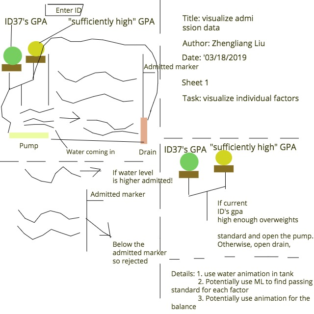
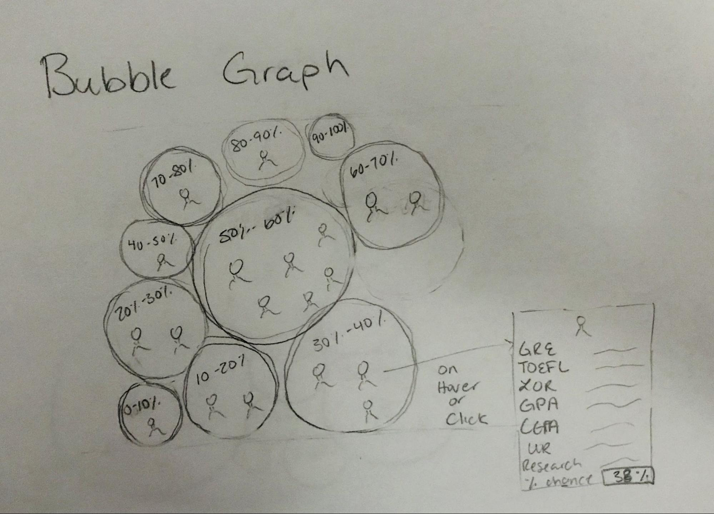
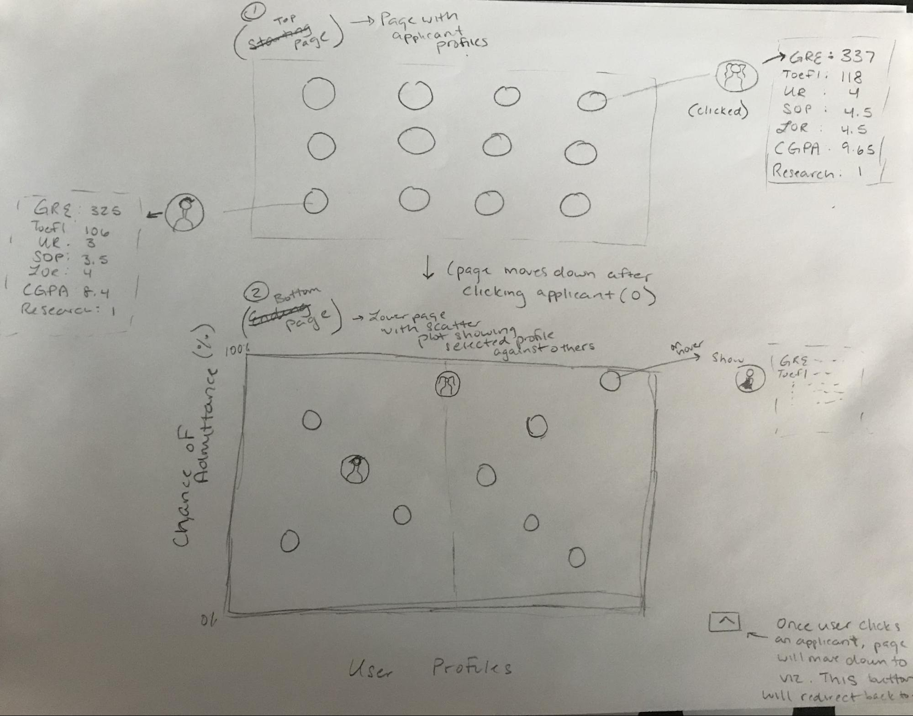
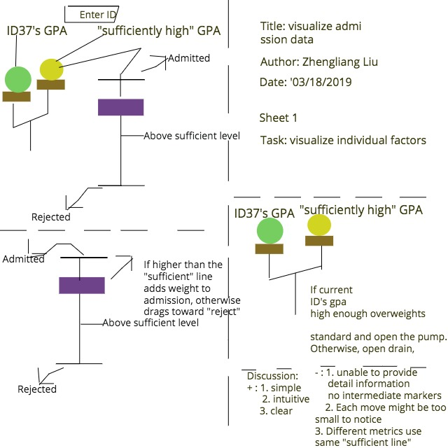
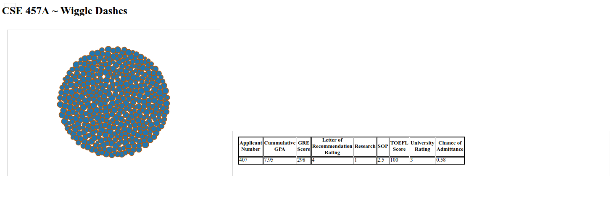

The project title, your names, e-mail addresses, IDs, a link to the project repository.
Title: Visualizing UCLA graduate admission.
Names: Jordan Chisam, Steven Harris, Zhengliang Liu
Emails: jachisam@wustl.edu, sharris22@wustl.edu, zhengliang@wustl.edu
IDs: 441729 (Jordan), 393270 (Steven), 465270 (Zhengliang)
Dev Team Repository: https://github.com/jachisam/cse457a-finalproject
Repository Provided by Professor: https://github.com/washuvis/admissions
Discuss your motivations and reasons for choosing this project, especially any background or research interests that may have influenced your decision.
College admission statistics, including those for graduate schools are always of great interest and importance for young people who are aspiring for getting better education. We have all gone through numerous applications. Our portfolios have all gone through numerous admission committees. Even though an applicant could evaluate her or his potentials for admissions, for the most part the admission process is a black box that provides little feedback. Finding out what factors lead to admission is certainly an important research topic with practical impacts. It would be very helpful if one could look at past admission data and make an assessment before investing the energy, time and money on an application for a particular school. Sadly, most schools never disclose such data. For those that do, the data might not be intuitive to be understood, More importantly, it is difficult to understand how exactly the measurements for each of the metrics factor into the final admission decision. Thus, we are very excited to start this project to visualize admission data with the aim of building an intuitive representation of the data. We found a dataset from UCLA on Kaggle and we think it is a good start, especially given that there is such a scarcity of admission data and even less visualization with such data.
Provide the primary questions you are trying to answer with your visualization. What would you like to learn and accomplish? List the benefits.
How to effectively visualize each factor’s contribution to the application process? With so many factors of consideration in the application process, it would be nice to be able to visualize each one of them clearly and effectively.
Benefits:
Benefits:
From where and how are you collecting your data? If appropriate, provide a link to your data sources.
We find our dataset on Kaggle. It is collected by a person named Mohan S Acharya, as part of his paper on a relevant topic [1]. Link: https://www.kaggle.com/mohansacharya/graduate-admissions.
[1] Mohan S Acharya, Asfia Armaan, Aneeta S Antony : A Comparison of Regression Models for Prediction of Graduate Admissions, IEEE International Conference on Computational Intelligence in Data Science 2019.
Do you expect to do substantial data cleanup? What quantities do you plan to derive from your data? How will data processing be implemented?
No, we do not expect to do substantial data cleanup. The dataset is very clean in the first place, nor is it particularly large. Data processing will likely be implemented with bash scripts or Python, or both.
How will you display your data? Provide some general ideas that you have for the visualization design. Create three alternative designs for your visualization. Create one final design that incorporates the best of your three designs. Describe your designs and justify your choices of visual encodings. You use the Five Design Sheet Methodology.
Design Sketches
(1) I use a “balance” to weigh a factor (e.g., gpa = 3.74) against a pre-calculated “sufficient level” (e.g., “3.8”). The size of the ball represents the value of the factor (such as “3.74”). If the balance favors that ID (in this case 37) 's GPA,it drags the bar upwards toward the line marked as "admitted", otherwise it loosens it down to get closer to the line marked as "reject". Gradually, as we go through every factor (GPA, TOEFL, GRE, recommendation letter, etc.) it moves toward either rejection or admission. The strings between the balance and the purple bar acts as strings of control. The color of the objects are for pop-out effect only with no special meanings, for now. It is simple and intuitive but the largest problem is that. The key is, with this design it is harder to differentiate the different importance of two different factors (e.g., GPA v.s. GRE score) because every factor shares that “sufficient” marker and it is hard to differentiate the effects visually.
(2) This is a very rough sketch of a basic single page visualization that allows users to look at various graduate school applicant profiles. Each profile will show the variables that are taken into account during the graduate school admissions process. As the user clicks on a circle (representing an applicant profile), the page will move down and display a scatter plot with the selected user profile (highlighted and larger) compared with other user profiles (non-highlighted and smaller--to avoid clutter). On hover, the circles (profiles) will enlarge and show their respective variables.
The downside of this visualization is that it is not clear how certain variables affect chance of admission. Additionally, it may be a bit monotonous for the user to go back and forth from the top of the page to the bottom. Our final design should take these faults into account and make it clear which variables have stronger influence, in addition to making user interaction easy rather than tedious.
(3) Another alternative design was to use a bubble graph visualization. This would depicted all of the probabilities of admission in 10% ranges. The lower part of the visualization would be used for clusters of low chances of admission, while the higher part of the visualization would be used for higher chances of admission. The size of the bubbles would demonstrate the portion of applicants that fall into that range. Each bubble would contain various applicants that fell into the chance of acceptance rate represented. On hover (or click), the variables of (3) Another alternative design was to use a bubble graph visualization. This would depicted all of the probabilities of admission in 10% ranges. The lower part of the visualization would be used for clusters of low chances of admission, while the higher part of the visualization would be used for higher chances of admission. The size of the bubbles would demonstrate the portion of applicants that fall into that range. Each bubble would contain various applicants that fell into the chance of acceptance rate represented. On hover (or click), the variables of each application would be displayed in a tooltip.
Ideally, this visualization would use color to separate the circles. Similar to (2), this visualization lacks the ability to properly demonstrate how each variable affects chance of admission.
(Final Design) The final design is an improvement of the first design with the “balance” and the “hanging bar”. It uses a water tank instead. In the above example with GPA, if the balance favors ID 37’s GPA against a pre-calculated standard/”sufficient” level, it opens the gate of the water pump and let water in. Otherwise, it opens the gate of the water drain and drains some water out. Gradually, as we go through every factor (GPA, TOEFL, GRE, ,recommendation letter, etc.) the water level goes up and down and eventually if it goes beyond the “admitted marker” this ID is admitted, otherwise rejected. The main improvement from the “hanging bar” design is that with water tank you can fill different amount of water to compare the importance of different factors (GPA vs GRE, the more important the more water coming in) but with the “hanging bar” it is harder to do that. Also, potentially, as the water tank design is inherently slightly more complex it can later convey more information from the each run’s water feature (color, “wave”) for more information. It is more expandable and flexible.
List the features without which you would consider your project to be a failure.
List the features which you consider to be nice to have, but not critical.
Make sure that you plan your work so that you can avoid a big rush right before the final project deadline, and delegate different modules and responsibilities among your team members. Write this in terms of weekly deadlines.
Weekly Deadlines (mondays)
Milestone 1 and 2 Screenshots
In Milestone 1, user selection had been implemented, but the water tank display was not.
In Milestone 2, the user selection is modified, the tables are reconstructed, and water tank is implemented.
Description: The left hand side is a panel where users could select an applicant's data to view.